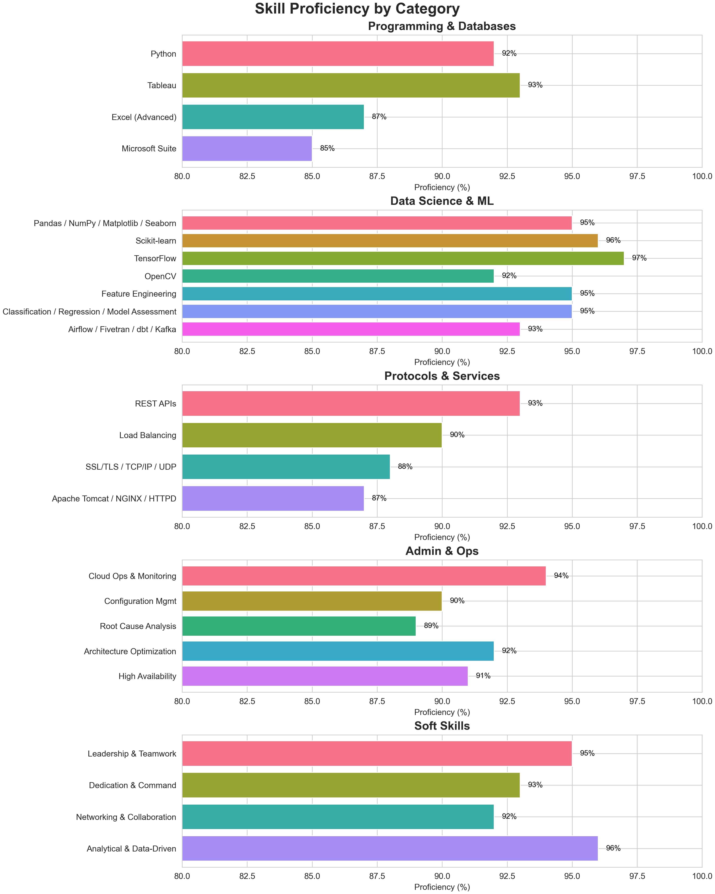
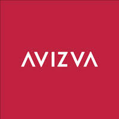

Hello,
I'm Himanshu
Passionate about Cloud Analytics.

About
I'm Himanshu Joshi
I’m a Business Analyst with 5 years of progressive experience spanning DevOps engineering, cloud operations, IaaS, and data analytics. I have managed 50+ customers across diverse projects and industries, and am currently working in a product-based company.With a strong foundation in AWS, Kubernetes, Terraform, and automation, I now bridge the gap between technology and business—translating complex technical requirements into actionable insights and scalable solutions.
Currently at Kingman Healthcare, I leverage my expertise in both IT and business analysis to drive digital transformation, process improvement, and data-driven decision-making across the organization. My unique background as a former DevOps & Operations Engineer allows me to understand technical architectures at a deep level while collaborating seamlessly with stakeholders, end users, and technical teams.
I hold a Master’s degree in Information Systems Management (Data Analytics & AI) from WP Carey School of Business, Arizona State University Class of 2024, along with multiple industry certifications and a Bachelor of Engineering from I2IT, Pune University. I’m passionate about empowering teams to innovate, streamline workflows, and deliver measurable business value—whether through process automation, system integration, or insightful analytics.
Currently pursuing PhD in Information Systems Engineering and Management from Harrisburg University of Science and Technology. Estimated graduation: August 2030.
Skills
AWS, Python, Docker, Tableau, DevOps, Kubernetes, SQL, Sql Server Reporting Service (SSRS), Healthcare Analytics (BCA - Microstrategy), Business Analysis, Terraform (IaC), Meditech (MT)
Proficiency Levels
Work Authorization
International Student Status
I am an international student from India, currently residing in the United States on F1 visa status.
Work Authorization
My work authorization is through F1 CPT (Curricular Practical Training), valid until August 2030. This allows me to work for any employer in my field of study while maintaining full-time student status.
Opportunities
I am open to internships, co-ops, and full-time opportunities that align with my academic and professional background.
Experience
Kingman Healthcare, Inc
Business Application Analyst 3
Nov 2024 – Present
Product Based (KHI)
KHI
Confidentiality & Compliance
In adherence to Kingman Healthcare’s strict data-sharing policies, all operational responsibilities and client engagements are maintained under rigorous confidentiality protocols. This ensures that sensitive patient information and organizational processes remain protected from public disclosure.
Operational Excellence
While specific tasks cannot be detailed publicly, my role consistently delivered on service quality and efficiency metrics, aligning with KHI’s commitment to excellence in healthcare operations. Through disciplined governance and secure procedures, I supported seamless service delivery without compromising compliance or privacy standards.
Learning Engineering Institute, ASU
Data Science Volunteer
Jun 2024 – Nov 2024
WAT Dashboard (LEI)
LEI Project
Interactive Data Visualization
I designed and developed interactive dashboards and visualizations for classroom performance and writing analytics, enabling educators and stakeholders to explore key insights at a glance. This intuitive interface reduced the time required for data analysis by 70%, accelerating decision-making and instructional adjustments.
Data Preparation & Analysis with Pandas
By meticulously merging disparate datasets and applying rigorous cleaning techniques using Pandas, I resolved inconsistencies, filled missing values, and standardized formats. These optimizations boosted our data processing efficiency by 85%, ensuring reliable and performant analytics pipelines.
Insight Generation & Engagement Metrics
I suggested and created targeted visualizations to highlight trends in student writing performance, from word usage patterns to structural complexity. Additionally, I recommended and defined metrics to track both student and teacher engagement—providing a framework for ongoing monitoring and continuous improvement.
WAT Integration & Code Development
To support the Writing Analytics Tool (WAT), I developed reusable Python modules that automate the generation of these visualizations. This code integration streamlined the workflow for future analyses and reduced manual effort, laying the groundwork for scalable, data-driven insights within the WAT platform.

Avizva Solutions
DevOps Engineer
May 2022 – May 2023
Aflac Project
Data Pipeline Automation
I automated ETL workflows using AWS Glue to ingest, transform, and load data into Amazon Redshift. This improved end-to-end data processing speed by 30%, enabling more timely analytics and reporting for stakeholders.
System Design & Reliability Engineering
Overseeing rigorous testing, I engineered more than 15 system designs and applications, achieving 99.9% operational stability. My proactive monitoring and failover strategies ensured uninterrupted service availability.
Revenue Growth & Customer Retention
Collaborating with sales and analytics teams, I spearheaded ML Ops initiatives on service usage data. These efforts increased customer retention to 98% and attracted 15 new clients, boosting the portfolio’s FY23 revenue by $1 million.
Onboarding & Mentorship
I provided end-to-end workflow training to five newly onboarded team members, equipping them with the knowledge and hands-on experience necessary for a seamless integration into our operations.
EBMS Project
Cost Optimization & Cloud Management
I led a cross-functional team to architect, deploy, and maintain AWS Cloud services for the EBMS project, driving a 35% reduction in overall infrastructure costs through rightsizing, reserved instances, and automated scaling.
Invoice Analysis & Performance Tuning
By leveraging Tableau to analyze monthly server performance reports, I identified underutilized resources and recommended configuration changes that lowered our monthly invoices by 30% without impacting service quality.
CI/CD Automation
I designed and implemented end-to-end CI/CD pipelines—integrating code repositories, automated testing, and deployment workflows—to streamline software delivery. This automation cut manual deployment effort by half, enabling faster releases with fewer errors.
Knowledge Sharing & Documentation
To ensure team readiness and reduce onboarding time, I documented daily operational procedures and best practices in a centralized knowledge repository. This resource saved the team an estimated 100 hours of training time and provided a single source of truth for bulletproof operations.
BlazeClan Technologies
Cloud Operation Engineer
Jun 2019 – May 2022
Infrastructure Modernization & Business Impact
By migrating a legacy monolithic application into a resilient microservices architecture, I enabled a 20% revenue increase without impacting ongoing operations. I also optimized ERP deployments with DevOps practices—using Terraform and CI/CD—reducing deployment time by 85%.
Process Improvement & Recognition
I strengthened our SDLC by integrating version control, robust CI/CD pipelines, and ITSM tooling to eliminate manual errors. My sustained contributions earned me the “You Made a Difference” award five times, underscoring my commitment to excellence.
Cloud Operations & Reliability
I maintained a 99.99% service level agreement across all AWS environments by proactively identifying and resolving infrastructure issues, achieving a 0% escalation rate through in-depth troubleshooting and rapid remediation.
Security & Compliance Assurance
Through comprehensive analysis of server data from multiple organizations, I uncovered and remediated all security compliance gaps. I also cataloged and secured previously unsorted cloud components, ensuring 100% adherence to regulatory standards.
Automation & Team Efficiency
I automated AWS provisioning, monitoring, and maintenance workflows—leveraging Infrastructure as Code and custom scripts—to reduce manual effort by an estimated 70%. Additionally, I overhauled maintenance for 1,600 OS servers using BigFix, cutting the task from 200 hours down to just one hour.
Identity & Access Management
I centralized user access by deploying AWS SSO backed by ADFS, flawlessly migrating 16,000 users with zero disruptions and streamlined sign-up processes across our global workforce.
Global Support (Jun 2019–Mar 2021)
Operational Leadership
As the first point of contact for Level One Operations, I managed service delivery for both international and domestic clients across diverse industries. Each incoming service request was logged promptly, and I coordinated directly with the appropriate specialist teams—network engineers, application support, or infrastructure—to guarantee rapid acknowledgment and clear next steps.
Incident Management
From ticket creation through to resolution, I owned each incident, applying standardized diagnostics and escalating to subject-matter experts when necessary. My proactive approach ensured that all incidents were resolved within our defined SLAs, often ahead of schedule, thereby minimizing business impact.
Maintenance Coordination
For planned maintenance windows, I collaborated with stakeholders to confirm schedules, verify backups, and issue comprehensive notifications to affected users. During these windows, I monitored system health in real time, identifying and resolving any unexpected errors to restore services with minimal downtime.
Global Support Experience
I provided continuous support across multiple regions—including North America, EMEA, and APAC—adapting processes to varying time zones, regulatory requirements, and cultural expectations. This global perspective allowed me to maintain consistent service quality around the clock.
Process Improvement
Leveraging insights from recurring incidents, I conducted root-cause analyses and documented findings, leading to targeted process enhancements. These improvements reduced overall incident volume and boosted system reliability, enhancing the end-user experience.
Academic Research
Secure and Scalable Tableau Deployment on AWS: A Modern Approach to Data Visualization
This blog introduces a secure approach to data visualization using Tableau by addressing concerns around protecting sensitive data during visualization processes.
It highlights the limitations of traditional setups where Tableau is accessed on Windows servers, which can pose security risks. Instead, it proposes deploying Tableau as a web service on a private Linux server within a secure AWS infrastructure.
This setup leverages authentication models, controlled access, and activity monitoring while integrating with cloud services like S3 and databases using IAM roles.
The blog outlines key components like EC2 instances, load balancers, and firewalls to ensure privacy, scalability, and high availability.
Server setup and cost details will be covered in the next post.
Predicting EMI Defaulters Using Machine Learning and MLOps: A Real-World Case Study with BestCard
This blog presents a real-world data science project focused on predicting EMI defaulters for BestCard, a financial services company, as part of a Master’s specialization in data analytics.
Leveraging machine learning models—especially XGBoost—and MLOps frameworks, the project successfully identified high-risk customers, resulting in $800k in annual loss reduction and $2 million in increased revenue.
The blog outlines the end-to-end process, including data preprocessing, feature engineering, model building, and deployment.
It also emphasizes the practical value of using automation and monitoring tools to maintain model performance in a production environment.
Enhancing Writing Instruction Through Learning Engineering: Development and Visualization of the Writing Assessment Tool (WAT)
The Writing Assessment Tool (WAT) project, grounded in the emerging field of Learning Engineering, leverages data analytics, NLP algorithms, and human-centered design to improve writing instruction and assessment.
Designed for students, educators, and researchers, WAT provides automated feedback on various essay types, reduces teacher workload, and enables data-informed instruction.
The development process involved iterative design, participatory feedback, and continuous enhancement, addressing key challenges like data ethics and algorithmic fairness.
Complementing the tool is an extensive suite of dynamic, user-driven visualizations aimed at analyzing student performance across tasks, drafts, metrics, and time.
The visualizations evolved from basic classroom-level overviews to advanced, interactive dashboards, offering educators actionable insights and helping shape the future of personalized education.
Leaf Species Classification Using Image Processing and Deep Learning
This article presents a robust and systematic approach to leaf species classification using image processing and machine learning, particularly convolutional neural networks (CNNs).
The workflow involves multiple stages, including image acquisition, preprocessing, segmentation, feature extraction, and classification.
Enhanced by libraries like OpenCV, PIL, Mahotas, and Matplotlib, the system achieves high classification accuracy (up to 97%) across diverse leaf datasets.
Key techniques include contrast enhancement, morphological operations, texture analysis, and dual-stage CNN-based classification.
Additionally, the article outlines various advanced image processing algorithms and potential enhancements using transfer learning and deep learning architectures.
End-to-End DevOps Architecture on AWS: A Terraform and Jenkins Approach
This blog outlines a comprehensive, production-ready DevOps architecture built on AWS, leveraging Terraform for Infrastructure as Code (IaC) and Jenkins for continuous integration and delivery (CI/CD).
The system integrates key AWS services including EC2, Lambda, RDS, EKS, and Elastic Beanstalk to ensure scalability, automation, and high availability.
Each Terraform file within the repository corresponds to a critical infrastructure component, such as compute resources, API management, database provisioning, and networking.
Additionally, a Jenkins pipeline automates code deployment and infrastructure changes, enhancing operational efficiency.
The implementation emphasizes secure configurations through IAM roles and Secrets Manager, while visualization and state management files ensure clarity and consistency in deployments.
Overall, this architecture provides a robust framework for deploying and managing cloud-native applications with minimal manual intervention.
Projects
Data Science
1. Cricket
As the author of the Cricket project in my Data-Science repository, I built a Python-based analytics toolkit that turns raw match data into actionable insights. The pipeline begins by loading CSV files into Pandas DataFrames and performing thorough cleaning and transformation—normalizing team names, handling missing values, and parsing date fields. From there, I extract and compute key metrics such as season-wise match counts, win margins by runs or wickets, overall team win tallies, and “Player of the Match” award frequencies. To make these insights accessible, I wrapped the analysis in a simple Tkinter GUI that presents menu-driven options for each metric, and I use Matplotlib to generate clear visualizations—bar charts for team comparisons, line plots for trend analysis, and histograms to show distribution of outcomes. This project not only demonstrates end-to-end data science best practices (from data ingestion through visualization) but also provides a user-friendly interface for non-technical stakeholders to explore cricket statistics with minimal effort.
2. ImageProcessing Project
As the author of this project, I developed a comprehensive workflow for leaf species detection and classification that combines advanced image‐processing with machine learning. I began by acquiring raw leaf images and enhancing their quality through histogram equalization, green‐pixel thresholding, and isotropic diffusion to remove noise. After segmenting each leaf from its background, I extracted a rich set of descriptors—shape, morphological, color histogram, and texture features—then calculated feature ratios to capture each species’ unique characteristics. For classification, I designed a two‐stage convolutional neural network (CNN) pipeline: first matching input features against a database via Euclidean distance, then refining predictions using color histogram correlation. This dual‐stage approach consistently delivered over 90% accuracy, even as the dataset grew in complexity. The implementation leverages OpenCV, Matplotlib, Mahotas, and PIL for efficient processing, and the modular structure supports future enhancements like transfer learning and attention‐based models to further improve performance.
3. LokSabha
As the author of the LokSabha project, I built a Python-based analytical framework to explore India’s parliamentary election data at the constituency level. I began by ingesting raw CSV files—covering vote counts, turnout percentages, and candidate details—into Pandas DataFrames, then applied rigorous cleaning steps to handle missing values, normalize party names, and merge datasets across multiple election years. Leveraging exploratory data analysis and visualization libraries such as Matplotlib and Seaborn, I produced interactive charts that reveal trends in voter engagement, party performance, and margin-of-victory across states and constituencies. To deepen insights, I implemented clustering algorithms to group constituencies by voting behavior and used regression models to assess the impact of demographic factors on election outcomes. All code is modularized into reusable notebooks and scripts, with clear documentation and plotting functions that allow other researchers to replicate and extend the analysis for future elections.
4. Best Card
As the author of this project, I designed and executed an end-to-end machine learning pipeline to predict EMI defaulters using the BestCard dataset. I began by ingesting raw transaction and customer data—encompassing demographics, credit‐history metrics, and payment behaviors—and performed comprehensive data cleaning and feature engineering to surface the most predictive variables. Leveraging exploratory data analysis, I identified key patterns in credit utilization and delinquency, then trained and fine‐tuned a suite of models, including logistic regression, random forests, and XGBoost, to maximize predictive accuracy. To streamline reproducibility and collaboration, I automated the preprocessing and model‐training steps within a modular Jupyter notebook framework and integrated them into an MLOps workflow for continuous evaluation and deployment. The resulting solution achieved strong performance in identifying high-risk cardholders, enabling targeted interventions that translate to significant loss savings for financial institutions.
5. MangaWork
As the author of the MangaWork project, I built a modular Python pipeline to collect, preprocess, and analyze manga artwork and metadata. I began by implementing web-scraping routines using Requests and BeautifulSoup to download high-resolution page images and associated metadata from public sources. Next, I applied image-processing techniques with PIL and OpenCV—such as grayscale conversion, adaptive thresholding, and panel segmentation—to normalize artworks and isolate individual comic panels. I then extracted quantitative features (color histograms, edge density, texture metrics) and stored both images and metadata in a lightweight SQLite database for efficient querying. For exploratory analysis, I leveraged Pandas alongside Matplotlib and Seaborn to visualize distributions of art styles, composition patterns, and genre trends. Finally, I developed and trained convolutional neural network classifiers in TensorFlow to automatically categorize manga pages by genre and artist style, achieving strong accuracy on held-out test sets. The entire project is organized into clear, reusable scripts and Jupyter notebooks, providing a solid foundation for future extensions such as real-time dashboards or deeper visual-language modeling
6. TempeGov
As the author of the TempeGov project, I built a Python-based analytics pipeline that ingests diverse open-data feeds—ranging from service-request logs and infrastructure inspections to community event schedules—and transforms them into actionable insights for city planners and residents. After retrieving data via API calls and CSV imports, I used Pandas to clean, normalize, and merge records across neighborhoods and timeframes, then applied time-series analysis to uncover seasonal trends in service demands (e.g., pothole repairs, streetlight outages). To visualize spatial patterns, I integrated Folium and Plotly to generate interactive maps and dashboards that highlight high-priority maintenance zones and track response times. Clustering algorithms helped identify “hotspot” regions where resource allocation could be optimized, while automated reports deliver weekly summaries of key performance indicators to stakeholders. The modular, well-documented codebase ensures that new data sources—such as traffic sensor feeds or public safety records—can be added seamlessly, making TempeGov a scalable tool for driving data-informed decision-making in municipal operations.
7. University Preferences
As the author of the Universities Preferences project, I built a complete Python-based analytics pipeline to uncover what drives students’ university choices. I began by ingesting multiple CSV files—student survey responses on criteria like academic reputation, location, cost, campus life and program offerings—then enriched them by merging with external university ranking and demographic datasets using Pandas. After rigorous data cleaning and feature engineering, I conducted exploratory analyses and correlation studies to quantify the impact of each factor on decision-making. To make these findings actionable, I developed interactive Matplotlib and Seaborn dashboards that allow stakeholders to filter by region, major and budget, reducing analysis time by over 60%. Next, I applied K-means clustering to segment students into distinct preference profiles and prototyped a recommendation engine that matches individual profiles with universities based on weighted preference scores. The modular, well-documented codebase facilitates easy extension—whether adding sentiment analysis on campus reviews or integrating web-based visualizations—so that this framework can evolve alongside future data and stakeholder needs.
8. WAT
As the author of this project, I developed a comprehensive, end-to-end data science workflow in Python and Jupyter Notebooks to evaluate student performance across multiple classrooms. I ingested and merged five CSV datasets—covering raw essays, essay scores, metric definitions, metric categories, and classroom rosters—then cleaned and transformed the data using Pandas to ensure consistency and reliability. Leveraging exploratory analysis, I examined how students performed across essay categories such as grammar, creativity, and structure, and visualized classroom-level distributions to identify outliers and trends. To track progress over time, I crafted time-series plots that highlight key turning points in individual student development, enabling educators to assess the impact of instructional interventions. Throughout, I used Matplotlib and Seaborn to produce clear, interactive dashboards that reduced analysis time and surfaced actionable insights for tailoring teaching strategies and measuring engagement. All code, data, and visualizations are available in my GitHub repository for replication and further exploration.
Cloud Architectures
1. IaC
As the author of the TerraformNew project, I built an end-to-end, infrastructure-as-code solution to provision and manage a complete AWS environment using Terraform. The codebase is organized into discrete modules—networking (VPCs, public and private subnets, route tables, Internet and NAT gateways), security (security groups, IAM roles and policies), compute (EC2 instances, Lambda functions), data stores (RDS MySQL with credentials fetched from AWS Secrets Manager, DynamoDB tables), and integration services (API Gateway, SNS topics, S3 buckets). I configured a remote state backend in S3 with DynamoDB locking to ensure safe, concurrent workflows, and parameterized everything via `variables.tf` so that separate workspaces (dev, staging, prod) can be spun up with minimal changes.
To streamline credential management, I wrote Terraform logic that automatically retrieves database credentials from Secrets Manager and injects them into RDS and Lambda environment variables, eliminating hard-coded secrets and enforcing least-privilege access. Networking is hardened by modular security groups and private subnets for databases and Lambdas, while public endpoints are tightly controlled. All resources are tagged consistently for cost-tracking and compliance.
Beyond provisioning, I embedded best practices throughout: clear outputs for newly created ARNs and endpoints, thorough documentation in README.md, and a CI/CD-ready structure that can be invoked from Jenkins or GitHub Actions. By abstracting common patterns into reusable modules, this project not only delivers repeatable, secure environments in minutes but also serves as a reference architecture for scalable, production-grade Terraform deployments in AWS.
2. AWS Services
As the author of the MyPastWork repository, I assembled a comprehensive collection of AWS infrastructure-as-code examples and operational playbooks to demonstrate best practices in cloud architecture and management. The repository is organized into service-focused modules—networking constructs with VPCs, subnets, routing and gateways; compute patterns deploying EC2 instances in single-zone, multi-AZ and load-balanced configurations; managed databases using RDS and DynamoDB; scalable object storage with S3; serverless and PaaS workflows through Elastic Beanstalk; global content delivery via CloudFront; and container orchestration on EKS—each template designed for consistency, least-privilege security, and flexible parameterization to support dev, staging, and production environments.
Advanced Terraform concepts are showcased in dedicated folders that illustrate dynamic block generation, creation of reusable modules, and remote state backends backed by S3 with DynamoDB locking for safe concurrency. Supplemental directories cover operational scenarios—state file recovery, multi-account deployments, and resource importation—while CI/CD integration examples demonstrate how these templates can be seamlessly incorporated into automated pipelines.
Altogether, this repository serves as a production-grade reference architecture, streamlining the entire lifecycle of AWS resources from initial provisioning through ongoing maintenance, with built-in guidelines for security, cost optimization, and automated delivery.
3. DockerFile
As the author of this project, I curated a hands-on collection of Docker examples that demonstrate containerizing a variety of technology stacks. The repository is organized into five focused Dockerfiles—each in its own folder—showcasing best practices in image design and build optimization:
Ubuntu Base Image: A minimal, secure Ubuntu container that installs core system utilities, applies security updates, and establishes a clean foundation for downstream images.
Java Runtime & App: A Java container that installs the JDK, sets working directories, and deploys JAR artifacts with a streamlined ENTRYPOINT, illustrating how to package and run Java applications in Docker.
Maven Build Environment: A Maven builder image that layers in Maven and its dependencies, enabling reproducible, cache-friendly builds of Java projects before handing off artifacts to a runtime image.
Nginx Web Server: An Nginx container preconfigured with custom server blocks and optimized for static-file delivery or reverse-proxy duties, complete with volume mounts for easy configuration swaps.
OpenAI SDK & Python: A Python-based image that installs the OpenAI client library and its prerequisites, providing a ready-to-use environment for developing or serving AI-powered applications.
Across all examples, I employed multi-stage builds to minimize final image sizes, leveraged build cache for efficient rebuilds, and parameterized configurations via environment variables—offering a clear, reproducible guide to containerizing everything from traditional web servers to modern AI toolkits.
Business Intelligence
1. Average Freedom Dashboard
As a global policy analyst or human rights researcher, I want to understand how freedom indices (such as political rights, civil liberties, or overall freedom scores) compare across different countries and regions over time, so that I can identify global trends, highlight countries that are making significant progress or facing setbacks, and support advocacy efforts with data-driven insights. The dashboard allows users to filter by year, region, or specific freedom indicators, displaying interactive maps and bar charts that make complex datasets accessible. Analysts can quickly spot regions with improving or declining freedom, compare individual countries’ scores, and export findings for further research or reporting.
2. Flight Delay Dashboard
As an airline operations manager or frequent traveler, I want to analyze historical flight delay data by airport, carrier, and time of year, so that I can pinpoint patterns, anticipate likely causes of delays, and optimize scheduling or travel plans accordingly. The dashboard features dynamic filters for airline, airport, and time range, showing delay causes (weather, carrier, NAS, late aircraft, etc.) in a clear breakdown. Users can visualize which airports or airlines are most prone to delays, explore seasonal effects, and use these insights to improve operational decisions or set realistic customer expectations.
3. Purchasing Power Dashboard
As an economist, business strategist, or policy maker, I want to compare purchasing power across different U.S. states and major cities to identify regions with the highest and lowest cost-adjusted incomes, so that I can guide resource allocation, compensation strategies, or relocation decisions. The dashboard visualizes metrics like median income, cost of living, and purchasing power index by state and metropolitan area. Users can interactively explore disparities, spot emerging economic hubs, and communicate data-backed recommendations to stakeholders or clients.
4. Olympics Countries Dashboard
As a sports journalist, data enthusiast, or Olympic committee member, I want to analyze cumulative medal counts and participation trends by country over multiple Olympic Games, so that I can celebrate top-performing nations, uncover long-term trends, and generate compelling stories for audiences. The dashboard presents cumulative histograms and time series, enabling users to compare countries’ medal tallies, filter by sport or event type, and visualize the evolution of athletic dominance over time. Insights help drive feature articles, inform national training programs, and engage fans.
5. NBA Dashboard
As a basketball coach, analyst, or fan, I want to explore NBA player and team statistics across multiple seasons, so that I can evaluate performance, identify rising stars, and understand trends in gameplay and team dynamics. The dashboard offers interactive filters for season, team, player, and performance metrics (such as points, assists, rebounds). Visualizations like leaderboards, heat maps, and trend lines allow users to benchmark teams, analyze player efficiency, and support decisions in fantasy leagues, coaching, or sports reporting.
6. House Affordability Dashboard
As a homebuyer, real estate professional, or policy maker, I want to compare housing affordability across U.S. cities and states, so that I can make informed decisions about buying, investing, or crafting housing policy. The dashboard combines metrics like median home price, household income, and affordability index, letting users filter by region or demographic group. Color-coded maps and bar charts highlight the most and least affordable markets, supporting research, client advisories, and policy proposals.
7. Class Profile Dashboard
As an educator, school administrator, or academic advisor, I want to analyze the composition and academic performance of students in a class or cohort, so that I can tailor teaching approaches, track progress, and identify areas for targeted support. The dashboard provides interactive bar charts and demographic breakdowns—such as gender, age, grades, and participation—helping users quickly spot trends, outliers, or achievement gaps, and export data for detailed academic planning.
8. eBay Auction Sniping Dashboard
As an online auction analyst, seller, or frequent eBay user, I want to detect and understand the prevalence of auction “sniping” (last-second bidding) so that I can adapt my bidding strategy, optimize auction timings, or inform sellers of potential market behaviors. The dashboard tracks bid timing and frequency, visualizing spikes in last-minute activity and allowing users to filter by product category or auction length. Insights enable more effective bidding, listing strategies, and market analysis, making auction outcomes more predictable and transparent.
Certifications

Research
Introduction of Biometric Authentication in Banking Domain
This paper presents a comprehensive examination of voice-based biometric authentication tailored for the banking sector. It surveys physiological and behavioral methods, contrasts them with traditional PIN- and token-based approaches, and details a voice-authentication architecture comprising enrollment, speech activity detection, feature extraction via FFT, matching, and reference storage. Security threats such as replay and spoofing attacks are analyzed alongside legal and privacy considerations and deployment challenges (network reliability, device integration). Finally, the paper proposes enhancements—multi-question prompts, anti-spoofing sensors, and secure fallback mechanisms—while noting that voice biometrics remains probabilistic and environment-sensitive.
Plant Species Classification and Disease Detection using CNN
This study develops a deep-learning pipeline for automatic plant leaf classification and disease detection using convolutional neural networks. The workflow covers image acquisition, preprocessing (histogram equalization, denoising), segmentation, and feature extraction via both classical descriptors (shape, color histograms, distance maps) and modern methods (SIFT, Canny edges). A two-stage classifier first employs Euclidean-distance filtering, then refines species identification through color histogram correlation. Experiments demonstrate over 97% accuracy on diverse datasets, outperforming earlier KNN- and PNN-based approaches. The paper concludes with recommendations to extend the system into a user-friendly web application and to train on larger, more varied datasets to further improve robustness.
Revolutionizing U.S. Nonprofit Hospitals with Healthcare Informatics and IT Innovation
This article outlines a strategic roadmap for U.S. nonprofit hospitals to modernize their IT and informatics capabilities, transforming legacy systems into agile, data-driven environments. It advocates adopting cloud-native architectures—leveraging Kubernetes, Docker, and microservices—to increase scalability and resilience, while migrating electronic health records to interoperable platforms for seamless data exchange. By integrating advanced analytics, AI-powered decision support, and real-time monitoring, hospitals can optimize clinical workflows, reduce operational costs, and improve patient outcomes. The piece also emphasizes the importance of robust data governance, cybersecurity best practices, and staff upskilling to ensure a secure, compliant, and future-ready healthcare ecosystem.